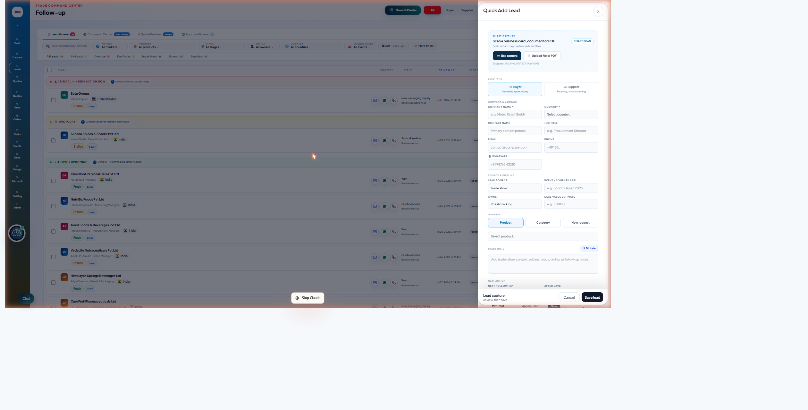

Everything you need to run your day in Setu Flow.
This guide walks through the packaging workspace exactly as your team will use it — captured, qualified, quoted, produced, and dispatched, all in one place. Find your role in the left-hand menu, or jump to Catalog Management if you set up pricing and materials.
Logging in & the basics
Everyone shares the same workspace and the same global header, no matter their role. Get comfortable with these first — they show up on every page.
The top bar
Along the top of every page:
- Growth Center — where Setu Guru surfaces opportunities worth a second look.
- All / Buyer / Supplier — filters the whole workspace to one side of your business.
- Share vCard — send your digital contact card to a buyer or supplier.
- + Quick Lead — the fastest way to capture a new contact, from anywhere.
- The bell icon is your notifications; your name/avatar opens account settings.
The sidebar
Your left-hand menu. Not every item may be visible to you — it adjusts to your role:
- Dash, Capture, Leads, Pipeline, Quotes — the sales pipeline.
- Send, Orders, Tasks, Events, Docs — communication and execution.
- Design, Dispatch — production.
- Catalog — what you sell.
- Admin — workspace setup (owner/admin only).
Sales
Capture the lead, qualify it, quote it, send it, follow it through to acceptance.
Your day, start to finish
- Start at Home. Check Follow-ups Due and the Needs Attention panel — this is your priority list for the day, ranked by what's most urgent.
- Capture every new inquiry immediately with Quick Lead, right from the header — don't let a lead wait until you're "at your desk properly."
- Qualify the lead — note the market, the categories they're interested in, and anything from the conversation worth remembering, on the lead's own page.
- Build the quote using the Catalog — pick the packaging family, then configure size, material, finish, and quantity for this specific buyer.
- Review and send — check the totals, terms, and branding on the quote before it goes out, then send for approval or straight to the buyer depending on your workspace's rules.
- Track it on Quote Lifecycle — this is your follow-up queue for everything that's out with a buyer: sent, accepted, needs revision, or going cold.
Capturing a lead with Quick Lead
Click + Quick Lead from the header, anywhere in the workspace. You can scan a business card or document, or just type the details in.

| Company name * | The buyer's company. Everything else can be filled in later. |
| Country * | Used for market reporting and routing. |
| Lead source / Event label | Where this came from — trade show, referral, website enquiry, etc. Worth filling in; it powers the source-performance reporting your admin sees. |
| Trade note | Anything from the conversation. This carries over automatically into the lead's Qualification Notes, so you don't have to type it twice. |
Working a lead

- Lifecycle stepper at the top shows where this buyer is: New Lead → Qualified → Contacted → Samples Sent → Negotiation → Won/Lost.
- Readiness Score is Setu Guru's read on how quote-ready this lead is.
- Next Touchpoint lets you schedule a follow-up and send it by WhatsApp or email right from the page.
- Qualification & Mapping is where you record which packaging categories and markets this buyer cares about.
Finding a lead again
The Leads page (Follow-up view) is your daily worklist, grouped into Critical, Due Today, and Active/Upcoming, with search and filters across market, product, stage, and owner. For opening a specific lead, the most reliable path today is via Pipeline in the sidebar — it opens a board view; click any card to go straight to that lead's page.
Quoting from the Catalog
Open Catalog from the sidebar. Nothing in the catalog is a fixed size or a fixed price — every family is a starting point you configure per order:
- Choose the family — Digital Labels, Stand Up Pouches, Shrink Sleeves, and so on.
- Enter the buyer's size and options at quote time — dimensions, material, finish, print colors, quantity.
- Let the system calculate the price — every quote runs the same pricing rules, so the number your buyer sees always matches what Setu Flow actually charges.
Following up on sent quotes

Click any customer in the list to see their full quote story — proposed, accepted, and order value, the recommended next action, and one-click buttons for Mark Accepted, Mark Rejected, Revision Requested, or Expire Quote. Once a buyer accepts, this is also where you hand the job to production.
Design
Get every accepted job's artwork ready before it can move into production.
When you log in, you land on the Design Queue automatically — every packaging line, across every active quote in the workspace, that still needs artwork attention. It's not filtered to "my leads"; Design supports every account manager's jobs.
- Scan the queue — jobs flagged Needs pre-press are listed before jobs still awaiting artwork from the buyer.
- Open the quote for full context on the spec — size, material, finish, print colors.
- Upload or review artwork proofs right from the queue row — no need to leave the page.
- Once artwork is print-ready, the job drops off your queue automatically and becomes visible to Operations on the Dispatch Board.
| Company & spec | Who it's for and a one-line summary of the job. |
| Quantity & unit price | So you know the scale of the job at a glance. |
| Artwork status | Needs pre-press, or not provided yet. |
| Open quote → | Jumps to the full quote for complete specs. |
Operations / Dispatch
Move every accepted job through the shop floor, stage by stage, until it ships.
You land on the Dispatch Board automatically — every packaging job on an accepted quote, tracked through a fixed production flow:
Converting
Pouching
- Check the stage funnel at the top of the board to see how many jobs are sitting at each stage right now — this is your bottleneck check for the day.
- Move a job forward by clicking Advance to [next stage] → on its row as work completes. A brand-new accepted job shows "Not started" until you click through the first time.
- Correct a mistake with Set stage…, which lets you jump directly to any stage — useful if a job needs to go back a step, or was updated out of order.
- Pull the Job Ticket for shop-floor use — production specs only, no pricing, ready to print.
Reading a job's status
| Not started | Accepted, but hasn't entered production tracking yet. |
| Pre-Press / Printing | Early production — shown with a day count since it entered that stage. |
| QC / Packed | Finishing up. |
| Dispatched | Done — this job has shipped. |
Ordering
Take an accepted quote and turn it into a tracked order.
- Find accepted quotes ready to move — on the Quote Lifecycle page, the "Order Handoff" group lists every accepted quote whose revenue is ready to become a real order.
- Create or open the order handoff — this carries the quote's customer details, packaging specs, and commercial terms across automatically, so nothing gets re-typed or recalculated by hand.
- Work the order in the Orders workspace — the quote itself locks once it's handed off, so Orders owns execution from that point.
- Track status changes through to completion, with full traceability back to the original quote at every step.
Owner / Admin
Keep pricing, catalog, and the team's access accurate — and check the numbers.
Everything Sales, Design, Operations, and Ordering rely on day-to-day is configured under Admin in the sidebar. Your daily/weekly rhythm:
- Check Packaging Analytics for a read on production throughput and revenue mix — jobs in production, recent dispatches, average cycle time, and which families are driving revenue.
- Review the Dispatch Board stage funnel for any bottleneck building up.
- Keep the catalog current — new materials, finishes, or pricing changes go through Reference Library and Pricing Templates (see Catalog Management below).
- Manage the team under Members & Roles — who's Sales, Design, Operations, or Ordering determines what they see and can act on.
Packaging Analytics, at a glance
Jobs in production
Everything accepted, not yet dispatched.
Dispatched, 30 days
Recent completed throughput.
Avg. cycle time
Pre-press through dispatch.
Value in production
What's currently on the floor.
Below the KPIs: a stage funnel chart, revenue by service family, the digital-vs-flexo split, and flexo cylinder reuse counts (how often a repeat job reused an existing cylinder vs. needed a fresh one).
Sidebar → Admin → Packaging Analytics
How catalog pricing works
Three pieces work together, and understanding how they connect makes everything else in this section click into place.
Service Family
What a buyer sees and picks in the Catalog — "Stand Up Pouches," "Digital Labels," and so on. Purely descriptive; holds no pricing itself.
Pricing Template
The actual rules — dimension ranges, material rates, print multipliers, finishes, MOQ tiers, setup charges, rush options — that calculate a real price the moment someone builds a quote.
Reference Library
Your organization's own list of materials, finishes, and service items — so a template author picks from a consistent list instead of retyping "BOPP White" slightly differently every time.
Service families
Sidebar → Admin → Packaging Service Families.
- Click "+ New family" or select an existing one to edit.
- Fill in the basics — name, URL slug, description, pricing mode (Dimensional for size-driven products like labels and pouches, Service for jobs priced per job/design like prototypes or pre-press), default unit, and default lead time.
- Pick an icon so it's recognizable in the Catalog.
- List the quote-time inputs buyers will be asked for — this is informational for the catalog page, shown as "what we'll capture at quote time"; it doesn't change pricing logic itself.
- Save, then link at least one pricing template to it (see below) — the family page will warn you if none exists yet.
Pricing templates
Sidebar → Admin → Packaging Pricing Templates. This is where the actual price your buyers see gets defined.
- Choose the service family this template belongs to, and whether it's digital or flexographic print (flexo unlocks cylinder cost rules).
- Set the allowed dimensions — width/height ranges and the area formula (flat sheet, or pouch with gusset).
- Add materials (or service items, for service-mode families) with their rate — pick from your Reference Library where possible so the name stays consistent across templates.
- Add finishes, print-color multipliers, MOQ tiers, setup charges, and rush options as needed — none are required to save, but a template with no material rates can't actually price a quote.
- Use the live preview on the right — it runs the exact same calculation the Quote Builder uses, so what you see while building the template is what a buyer's quote will show.
- Check the health check panel — Setu Guru reviews the template for gaps (like a flexo template with no cylinder tiers) before you activate it. It only ever flags issues; it never changes a rule for you.
- Toggle "Active" only once you're confident — inactive templates aren't available in the Quote Builder, which is a safe way to stage a new template before it goes live.
Reference library
Sidebar → Admin → Reference Library. Your organization's own, reusable list of materials, finishes, and service items — separate from any other organization's, and yours to shape.
- First time here? Click Set up starter library — it loads a common starting set of materials, finishes, and service items for packaging work, which you can edit or remove freely afterward.
- Browse by tab — Materials, Finishes, and Service items are kept separate since they're used differently across dimensional vs. service-mode templates.
- Add anything specific to your shop with + Add — give it a name and, for materials, a thickness; for finishes/service items, a typical pricing basis.
- Deactivate an item you no longer use rather than deleting outright — it stops appearing as a suggestion but doesn't touch any template that already used it.
Once your library has entries, they show up automatically as suggestions while typing a material or finish label inside a Pricing Template — with a small bookmark button to save any new label you type directly into the library for next time.
FAQ & known issues
A lead's "Open" button isn't responding on the Leads page
Use Pipeline in the sidebar instead for now — it opens a board view of leads by stage; clicking any card takes you straight to that lead's page. A fix for the direct list-view "Open" action is in progress.
I can't get a brand-new lead to create a quote
Category selection in Qualification & Mapping isn't reliably saving right now, which can block quote creation on new leads specifically ("Lead needs at least one active product interest"). This doesn't affect existing leads that already have product interest recorded. Flag it to your admin — a fix is in progress, and there's no full workaround yet within the app.
Where do I report something that looks broken?
Tell your workspace admin directly, or use the Discussion button available on quote and lead pages where relevant. Please don't repeatedly retry a broken action — one clear report is more useful than several attempts.
Glossary
| Term | Meaning |
|---|---|
| Lead | A prospective buyer or supplier before there's a confirmed order. |
| Quote Lifecycle | The tracked journey of a quote from sent through accepted, rejected, or expired. |
| Service Family | A category of packaging Sales can quote — e.g. Stand Up Pouches. |
| Pricing Template | The specific set of rules that turns a buyer's size/material/quantity choices into a real price. |
| Reference Library | Your organization's reusable list of material, finish, and service-item names. |
| Order Handoff | The moment an accepted quote's execution work moves from Sales to Orders/Operations. |
| Production stage | Where a job sits on the shop floor: Pre-Press → Printing → Lamination/Converting → Slitting/Pouching → QC → Packed → Dispatched. |
| Web width | The width of material the press actually runs, for a flexo job — captured at quote time alongside repeat length, and checked against the template's configured range. |
| Swatch | A small color marker on a material or finish in the Reference Library, for telling similar items apart at a glance. |
| Setu Guru | The in-app assistant — explains pages, flags gaps, and drafts messages; never acts without your confirmation. |